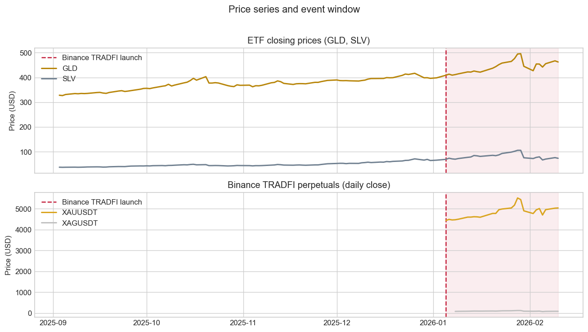
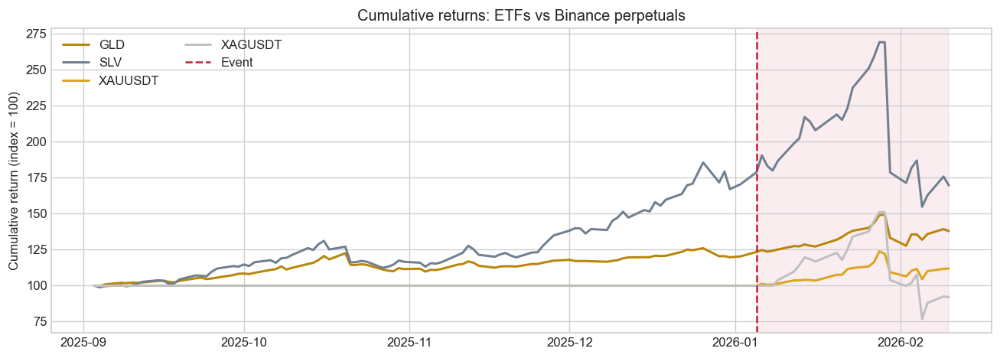
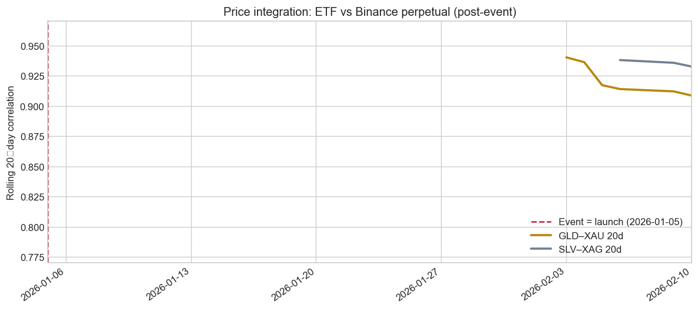
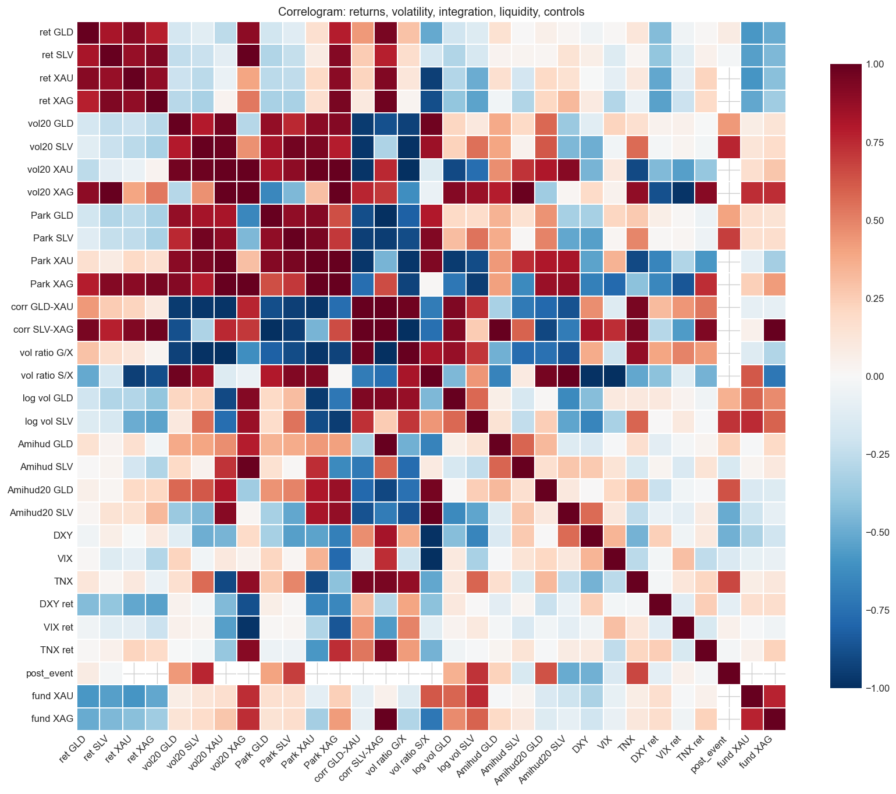
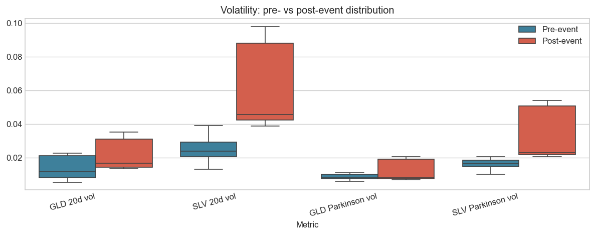

Daily: 112 rows (features_daily.csv)
Hourly: 3888 rows (features_hourly.csv)
1-minute: 53864 rows (features_1m.csv)Binance Gold & Silver Perpetuals and ETF Markets
1. Introduction and research question
Research question.
Did the introduction of Binance TRADFI gold and silver perpetual futures change volatility, liquidity and price integration in the corresponding precious metal ETF markets (GLD and SLV)?
Main hypotheses.
- H1 (volatility): Realized volatility of gold and silver ETFs increased after the launch of Binance XAUUSDT and XAGUSDT TRADFI perpetual futures.
- H2 (liquidity): Trading activity and liquidity of GLD and SLV improved (higher volume, lower Amihud illiquidity) after the launch.
- H3 (integration): Short‑run price co‑movement and beta of GLD/SLV with Binance XAUUSDT/XAGUSDT returns increased after the launch.
2. Data and feature set
We use three pre‑built datasets produced by build_features.py:
- Daily panel (
features_daily.csv): 112 trading days, 85 variables. Used for the event study (pre/post comparison, regressions). - Hourly panel (
features_hourly.csv): one row per hour over the same calendar span; Binance 1m aggregated to hourly, ETF/controls forward-filled from daily. - 1-minute panel (
features_1m.csv): one row per Binance XAUUSDT 1m candle with daily ETF/controls merged by date. Used to satisfy the course requirement of ≥10,000 observations.
Raw data sources and variable definitions are in DATA_DESCRIPTION.md, VARIABLES_DESCRIPTION.md, and DATA_ROW_COUNTS_AND_PERIODS.md.
(112, 85)| px_gld_open | px_gld_high | px_gld_low | px_gld_close | vol_gld | px_slv_open | px_slv_high | px_slv_low | px_slv_close | vol_slv | ... | amihud_20_slv | funding_xau_change | funding_extreme_xau | oi_xau_change | funding_xag_change | funding_extreme_xag | oi_xag_change | dxy_ret | vix_ret | tnx_ret | |
|---|---|---|---|---|---|---|---|---|---|---|---|---|---|---|---|---|---|---|---|---|---|
| Date | |||||||||||||||||||||
| 2025-09-02 | 320.820007 | 325.920013 | 320.239990 | 325.589996 | 21247500.0 | 36.630001 | 37.169998 | 36.430000 | 37.150002 | 35875300.0 | ... | NaN | NaN | 0 | NaN | NaN | 0 | NaN | NaN | NaN | NaN |
| 2025-09-03 | 327.760010 | 329.450012 | 326.730011 | 328.140015 | 16062200.0 | 37.330002 | 37.639999 | 37.180000 | 37.340000 | 27291200.0 | ... | NaN | NaN | 0 | NaN | NaN | 0 | NaN | -0.002646 | -0.048936 | -0.015552 |
| 2025-09-04 | 327.029999 | 327.559998 | 325.350006 | 326.690002 | 11703100.0 | 37.200001 | 37.220001 | 36.630001 | 36.930000 | 45258500.0 | ... | NaN | NaN | 0 | NaN | NaN | 0 | NaN | 0.002138 | -0.066375 | -0.008346 |
| 2025-09-05 | 329.529999 | 331.440002 | 328.929993 | 331.049988 | 16065200.0 | 37.410000 | 37.599998 | 36.970001 | 37.209999 | 25435500.0 | ... | NaN | NaN | 0 | NaN | NaN | 0 | NaN | -0.005915 | -0.007874 | -0.021787 |
| 2025-09-08 | 333.660004 | 335.670013 | 333.230011 | 334.820007 | 18617300.0 | 37.570000 | 37.830002 | 37.360001 | 37.509998 | 25019700.0 | ... | NaN | NaN | 0 | NaN | NaN | 0 | NaN | -0.003278 | -0.004622 | -0.009838 |
5 rows × 85 columns
2.1 Basic cleaning and event date
We define the event as the launch of Binance XAUUSDT TRADFI perpetual futures. So there is one date: 2026‑01‑05 (event = launch).
To keep a meaningful pre‑event window, we only require that ETF prices and returns are available; Binance‑specific fields are allowed to be missing before the launch.
<class 'pandas.core.frame.DataFrame'>
DatetimeIndex: 111 entries, 2025-09-03 to 2026-02-10
Data columns (total 85 columns):
# Column Non-Null Count Dtype
--- ------ -------------- -----
0 px_gld_open 111 non-null float64
1 px_gld_high 111 non-null float64
2 px_gld_low 111 non-null float64
3 px_gld_close 111 non-null float64
4 vol_gld 111 non-null float64
5 px_slv_open 111 non-null float64
6 px_slv_high 111 non-null float64
7 px_slv_low 111 non-null float64
8 px_slv_close 111 non-null float64
9 vol_slv 111 non-null float64
10 dxy 111 non-null float64
11 vix 111 non-null float64
12 tnx 111 non-null float64
13 px_xau_binance_open 26 non-null float64
14 px_xau_binance_high 26 non-null float64
15 px_xau_binance_low 26 non-null float64
16 px_xau_binance_close 26 non-null float64
17 px_xau_binance_volume 26 non-null float64
18 px_xau_binance_num_trades 26 non-null float64
19 px_xag_binance_open 23 non-null float64
20 px_xag_binance_high 23 non-null float64
21 px_xag_binance_low 23 non-null float64
22 px_xag_binance_close 23 non-null float64
23 px_xag_binance_volume 23 non-null float64
24 px_xag_binance_num_trades 23 non-null float64
25 funding_xau 22 non-null float64
26 funding_mark_xau 22 non-null float64
27 funding_xag 22 non-null float64
28 funding_mark_xag 22 non-null float64
29 oi_xau 0 non-null float64
30 oi_xag 0 non-null float64
31 ret_xau_binance 25 non-null float64
32 ret_xag_binance 22 non-null float64
33 ret_gld 111 non-null float64
34 ret_slv 111 non-null float64
35 ret_xau_binance_abs 25 non-null float64
36 ret_xau_binance_sq 25 non-null float64
37 ret_xag_binance_abs 22 non-null float64
38 ret_xag_binance_sq 22 non-null float64
39 ret_gld_abs 111 non-null float64
40 ret_gld_sq 111 non-null float64
41 ret_slv_abs 111 non-null float64
42 ret_slv_sq 111 non-null float64
43 vol_realized_10_ret_xau_binance 16 non-null float64
44 vol_realized_20_ret_xau_binance 6 non-null float64
45 vol_realized_10_ret_xag_binance 13 non-null float64
46 vol_realized_20_ret_xag_binance 3 non-null float64
47 vol_realized_10_ret_gld 102 non-null float64
48 vol_realized_20_ret_gld 92 non-null float64
49 vol_realized_10_ret_slv 102 non-null float64
50 vol_realized_20_ret_slv 92 non-null float64
51 vol_parkinson_gld 93 non-null float64
52 vol_parkinson_slv 93 non-null float64
53 vol_parkinson_xau_binance 7 non-null float64
54 vol_parkinson_xag_binance 4 non-null float64
55 vol_gk_gld 93 non-null float64
56 vol_gk_slv 93 non-null float64
57 vol_gk_xau_binance 7 non-null float64
58 vol_gk_xag_binance 4 non-null float64
59 corr_20_gld_xau 6 non-null float64
60 corr_20_slv_xag 3 non-null float64
61 beta_60_gld_on_xau 0 non-null float64
62 beta_60_slv_on_xag 0 non-null float64
63 vol_ratio_gld_xau 6 non-null float64
64 vol_ratio_slv_xag 3 non-null float64
65 abs_return_gap_gld_xau 25 non-null float64
66 abs_return_gap_slv_xag 22 non-null float64
67 post_event 111 non-null int64
68 event_window_7 111 non-null int64
69 event_window_14 111 non-null int64
70 log_vol_gld 111 non-null float64
71 log_vol_slv 111 non-null float64
72 amihud_gld 111 non-null float64
73 amihud_20_gld 92 non-null float64
74 amihud_slv 111 non-null float64
75 amihud_20_slv 92 non-null float64
76 funding_xau_change 21 non-null float64
77 funding_extreme_xau 111 non-null int64
78 oi_xau_change 0 non-null float64
79 funding_xag_change 21 non-null float64
80 funding_extreme_xag 111 non-null int64
81 oi_xag_change 0 non-null float64
82 dxy_ret 111 non-null float64
83 vix_ret 111 non-null float64
84 tnx_ret 111 non-null float64
dtypes: float64(80), int64(5)
memory usage: 74.6 KBpost_event
0 85
1 26
Name: count, dtype: int643. Descriptive statistics
3.1 Prices and returns

Cumulative returns (normalized to 100 at the first date): a clear view of relative performance and whether paths diverge after the event.

| mean | std | min | max | |
|---|---|---|---|---|
| ret_gld | 0.003160 | 0.019440 | -0.108412 | 0.061647 |
| ret_slv | 0.006136 | 0.048138 | -0.336037 | 0.086602 |
| ret_xau_binance | 0.005092 | 0.034425 | -0.104457 | 0.064529 |
| ret_xag_binance | 0.002603 | 0.106036 | -0.312222 | 0.145629 |
3.2 Volatility and liquidity over time
We look at 20‑day realized volatility for GLD and SLV and ETF trading volume.

What this shows: The rolling 20-day correlation is the correlation between daily returns of the ETF (GLD or SLV) and the Binance perpetual (XAUUSDT or XAGUSDT) over the last 20 days. Values near 1 mean the two series move together; values near 0 mean no linear link. So we see how strongly gold/silver ETF and crypto perpetual prices co-move after the Binance launch. This metric exists only when both sides have data (post-event). Pre/post comparison is in the tables in section 4 and 6.
Single chart (gold and silver together): Same scale and dates so both lines are easy to compare. Y-axis is limited to the range where the data lies so the lines are not squeezed at the top. The vertical line is the event date — that is, the launch date of Binance XAUUSDT (2026-01-05). We use this single date as “the event” everywhere in the report. The SLV–XAG line starts later than GLD–XAU because XAGUSDT was listed a few days after XAUUSDT, so the 20-day rolling window has enough data only from a later date.

| mean | std | min | max | |
|---|---|---|---|---|
| amihud_gld | 6.977909e-10 | 5.506247e-10 | 3.474315e-12 | 2.390221e-09 |
| amihud_20_gld | 6.709650e-10 | 1.040833e-10 | 4.831240e-10 | 9.406983e-10 |
| amihud_slv | 4.710888e-10 | 3.304889e-10 | 1.153311e-12 | 2.008110e-09 |
| amihud_20_slv | 4.803576e-10 | 1.172749e-10 | 2.962718e-10 | 7.452803e-10 |
3.3 Correlogram
We compute the correlation matrix for a set of variables that are meaningful for the analysis: returns, volatility measures, integration (rolling correlation/beta), liquidity proxies, controls and the event dummy. Only numeric series with sufficient non-missing overlap are included.

Comment. Variables with the largest absolute correlation with post_event are those that move most with the event. This helps spot which outcomes (e.g. volatility, correlation) are most linked to the launch.
4. Event‑study style comparison
We compare average volatility, volume and integration measures before and after the futures launch. The event date is 2026-01-05 (Binance XAUUSDT TRADFI launch).
Pre vs post distributions for key metrics (boxplots by period):

| metric | period | mean | std | n | |
|---|---|---|---|---|---|
| 0 | GLD 20d vol | pre | 1.343866e-02 | 6.062648e-03 | 66 |
| 1 | GLD 20d vol | post | 2.084301e-02 | 8.844632e-03 | 26 |
| 2 | SLV 20d vol | pre | 2.411353e-02 | 6.133201e-03 | 66 |
| 3 | SLV 20d vol | post | 5.884494e-02 | 2.324772e-02 | 26 |
| 4 | GLD Parkinson vol | pre | 8.671084e-03 | 1.418413e-03 | 67 |
| 5 | GLD Parkinson vol | post | 1.181838e-02 | 5.792720e-03 | 26 |
| 6 | SLV Parkinson vol | pre | 1.625328e-02 | 2.567734e-03 | 67 |
| 7 | SLV Parkinson vol | post | 3.233210e-02 | 1.407079e-02 | 26 |
| 8 | GLD volume | pre | 1.512372e+07 | 9.048477e+06 | 85 |
| 9 | GLD volume | post | 2.534337e+07 | 1.859671e+07 | 26 |
| 10 | SLV volume | pre | 4.388922e+07 | 2.724932e+07 | 85 |
| 11 | SLV volume | post | 1.591018e+08 | 1.001239e+08 | 26 |
| 12 | corr_20_gld_xau | pre | NaN | NaN | 0 |
| 13 | corr_20_gld_xau | post | 9.213689e-01 | 1.339276e-02 | 6 |
| 14 | corr_20_slv_xag | pre | NaN | NaN | 0 |
| 15 | corr_20_slv_xag | post | 9.354342e-01 | 2.670531e-03 | 3 |
Comment. Compare the “pre” and “post” rows for each metric. If the post mean is higher than the pre mean for volatility or correlation, that points to an increase after the event. For volume, higher post means more trading. For liquidity (Amihud), lower post means better liquidity.
For a more formal comparison we can run simple t‑tests.
| metric | t_stat | p_value | |
|---|---|---|---|
| 0 | GLD 20d vol | 3.921186 | 3.965328e-04 |
| 1 | SLV 20d vol | 7.515452 | 5.090965e-08 |
| 2 | GLD Parkinson vol | 2.738718 | 1.095236e-02 |
| 3 | SLV Parkinson vol | 5.789406 | 4.466060e-06 |
| 4 | GLD volume | 2.705857 | 1.134125e-02 |
| 5 | SLV volume | 5.802084 | 4.025468e-06 |
| 6 | corr_20_gld_xau | NaN | NaN |
| 7 | corr_20_slv_xag | NaN | NaN |
Comment. A low p-value (e.g. below 0.05) means the difference between pre and post is statistically significant. Use this together with the pre/post means to say whether the change is meaningful.
5. Simple regression models
We estimate simple linear models to quantify the impact of the event and controls on ETF volatility and absolute returns.
| vol_realized_20_ret_gld | vol_realized_20_ret_slv | dxy_ret | vix_ret | tnx_ret | post_event | |
|---|---|---|---|---|---|---|
| Date | ||||||
| 2025-09-30 | 0.007630 | 0.013341 | -0.001431 | 0.009877 | 0.001689 | 0 |
| 2025-10-01 | 0.007610 | 0.013404 | -0.000614 | 0.000614 | -0.010177 | 0 |
| 2025-10-02 | 0.007558 | 0.013260 | 0.001432 | 0.020657 | -0.004393 | 0 |
| 2025-10-03 | 0.007311 | 0.013733 | -0.001329 | 0.001202 | 0.007555 | 0 |
| 2025-10-06 | 0.007869 | 0.013770 | 0.003983 | -0.016960 | 0.010385 | 0 |
==============================================================================
coef std err t P>|t| [0.025 0.975]
------------------------------------------------------------------------------
const 0.0134 0.001 15.519 0.000 0.012 0.015
post_event 0.0075 0.002 4.600 0.000 0.004 0.011
dxy_ret 0.2238 0.236 0.947 0.346 -0.246 0.694
vix_ret 0.0036 0.009 0.383 0.703 -0.015 0.022
tnx_ret -0.0053 0.093 -0.057 0.955 -0.189 0.179
==============================================================================
==============================================================================
coef std err t P>|t| [0.025 0.975]
------------------------------------------------------------------------------
const 0.0241 0.002 14.512 0.000 0.021 0.027
post_event 0.0350 0.003 11.148 0.000 0.029 0.041
dxy_ret 0.3997 0.454 0.881 0.381 -0.502 1.301
vix_ret -0.0017 0.018 -0.095 0.924 -0.037 0.034
tnx_ret -0.0560 0.178 -0.315 0.753 -0.409 0.297
==============================================================================Comment. The post_event coefficient is the main result: it shows how much volatility changed after the launch, once we control for DXY, VIX and 10Y yield changes. If it is positive and the p-value (P>|t|) is below 0.05, we conclude that volatility increased after the event (H1 supported for that ETF).
If needed, we can also model absolute returns as a simple proxy for volatility:
==============================================================================
coef std err t P>|t| [0.025 0.975]
------------------------------------------------------------------------------
const 0.0097 0.002 6.238 0.000 0.007 0.013
post_event 0.0124 0.003 3.842 0.000 0.006 0.019
dxy_ret 0.6160 0.433 1.422 0.158 -0.243 1.475
vix_ret 0.0068 0.018 0.370 0.712 -0.030 0.043
tnx_ret -0.0439 0.171 -0.257 0.798 -0.383 0.295
==============================================================================
==============================================================================
coef std err t P>|t| [0.025 0.975]
------------------------------------------------------------------------------
const 0.0211 0.004 5.582 0.000 0.014 0.029
post_event 0.0379 0.008 4.838 0.000 0.022 0.053
dxy_ret 2.0522 1.050 1.954 0.053 -0.030 4.134
vix_ret 0.0416 0.045 0.933 0.353 -0.047 0.130
tnx_ret -0.0396 0.414 -0.095 0.924 -0.861 0.782
==============================================================================6. Interpretation and next steps
6.1 Key results summary
The table below summarizes pre- vs post-event means, t-test p-values, and the regression coefficient on post_event (with DXY, VIX and 10Y yield changes as controls) for the main outcome variables.
| Metric | Pre mean | Post mean | t-test p | post_event coef | regression p | |
|---|---|---|---|---|---|---|
| 0 | GLD 20d vol | 0.013439 | 2.084300e-02 | 0.0004 | 0.007529 | 0.0 |
| 1 | SLV 20d vol | 0.024114 | 5.884500e-02 | 0.0 | 0.035004 | 0.0 |
| 2 | GLD Parkinson vol | 0.008671 | 1.181800e-02 | 0.011 | — | — |
| 3 | SLV Parkinson vol | 0.016253 | 3.233200e-02 | 0.0 | — | — |
| 4 | GLD volume | 15123724.705882 | 2.534337e+07 | 0.0113 | — | — |
| 5 | SLV volume | 43889215.294118 | 1.591018e+08 | 0.0 | — | — |
| 6 | Corr GLD–XAU | — | 9.213690e-01 | — | — | — |
| 7 | Corr SLV–XAG | — | 9.354340e-01 | — | — | — |
Comment. This table brings everything together. Use “Pre mean” vs “Post mean” to see the direction of change; “t-test p” to see if the change is significant; and “post_event coef” with “regression p” (for GLD and SLV volatility) to see the effect of the event after controlling for macro factors. For volatility, a positive and significant post_event coef supports H1; for correlation, higher post mean and low t-test p support H3; for volume, higher post mean supports H2.
6.2 Empirical results
**Volatility (H1):** After controlling for DXY, VIX and 10Y yield changes, the post-event coefficient in the GLD 20-day volatility regression is 0.00753 (p = 0.000), so volatility increased post launch and the effect is significant at the 5% level.
For SLV, the post_event coefficient is 0.03500 (p = 0.000): volatility increased and is significant.
**Integration (H3):** Average rolling correlation GLD–XAU is 0.921 post-event (pre: nan); SLV–XAG is 0.935 post-event (pre: nan). Higher post-event correlations would support increased price co-movement between ETFs and Binance perpetuals.
**Liquidity (H2):** Average GLD volume is 25343369 post-event vs 15123725 pre-event; SLV volume can be read from the pre/post table. Higher volume and lower Amihud post-event would indicate improved liquidity.
6.3 Conclusions on hypotheses
Using the key-results table and regressions above, we state whether each hypothesis is supported or not.
H1 (volatility increase after launch):
GLD: supported (positive and significant post_event means higher volatility).
SLV: supported.
H3 (stronger co-movement, higher rolling correlation post-event):
GLD–XAU: not supported.
SLV–XAG: not supported.
H2 (improved liquidity: higher volume, lower Amihud):
GLD volume: higher post (higher post supports H2).
SLV volume: higher post.
Check Amihud in the pre/post table; lower post = better liquidity.6.4 Limitations and extensions
- Short post-event window. We have limited days after the Binance launch. Results can change when more data are available.
- Robustness. Try different event dates, volatility windows (e.g. 10d or 60d), or placebo tests (fake event date) to see if the effects hold.
- Beta. The key-results table focuses on volatility, volume and correlation. You can add pre/post means for
beta_60_gld_on_xauandbeta_60_slv_on_xagin the same way if you want to discuss integration in terms of beta.
6.5 Conclusion
We asked whether the launch of Binance gold and silver perpetuals (XAUUSDT, XAGUSDT) changed volatility, liquidity and price co-movement in gold and silver ETFs (GLD, SLV). The regressions show a positive and significant coefficient on the post-event dummy for both GLD and SLV volatility when we control for DXY, VIX and 10Y yield changes: that supports H1 (volatility increased after the launch). For H3 (integration), we look at whether rolling correlations GLD–XAU and SLV–XAG are higher and statistically different post-event; the conclusions in section 6.3 state whether that is the case. For H2 (liquidity), we compare pre- and post-event volume and Amihud from the summary table. In short: the evidence from this sample points to higher ETF volatility after the Binance TRADFI launch, with integration and liquidity conclusions as in the hypothesis checks above. Because the post-event window is still short, updating the analysis with more data is recommended.